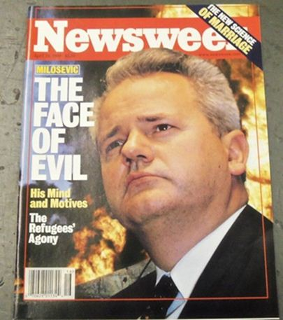
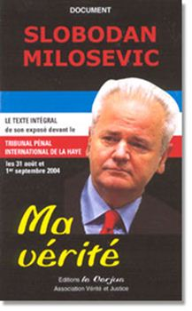
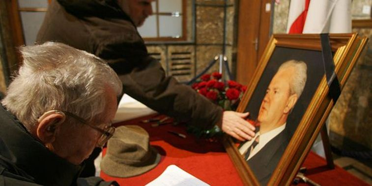

L’Amérique et l’Europe de l’ouest n’ont eu de qualificatifs assez forts pour exprimer la haine que leur inspirait l’ancien président de la République de Serbie, Slobodan Milosevic, dans les années 1990. Les medias dominants l’avaient unanimement surnommé « le boucher des Balkans », Bill Clinton l’avait accusé d’avoir commencé les guerres en Croatie et en Bosnie, Jacques Chirac avait dénoncé chez lui sa « volonté méthodique d’effacement de tout un peuple » et lui imputait des « pratiques qui rappellent les heures les plus sombres de la barbarie ». Lors de son arrestation George W. Bush avait déclaré que c’était un « premier pas pour l’inculper pour les crimes contre l’humanité qu’il avait commis » et le secrétaire général de l’ONU, Kofi Annan, le jour de son arrestation, déclara que c’est « un jour qui restera gravé dans les mémoires non sous le signe de la vengeance, mais sous celui de la justice ».
Slobodan Milosevic a été accusé de tous les maux : crimes de guerre, crime contre l’humanité, génocide etc. et si on devait interviewer nos concitoyens de l’ouest aujourd’hui il y a fort à parier que c’est tout ce qu’ils retiendraient du défunt président serbe. Et pourtant… tout cela était faux. Les spécialistes objectifs le disaient depuis longtemps et l’aveu de cette innocence est finalement venu du Tribunal Pénal International pour l’ex-Yougoslavie (TPIY) qui vient de conclure que le Président Milosevic n’était, en fait, pas le barbare qu’on avait décrit lors de la guerre de Bosnie-Herzégovine entre 1992 et 1995.
L’information aurait dû faire l’effet d’une bombe médiatique mais elle a été glissée discrètement, page 1303 au paragraphe 3460 le 24 mars dernier dans le jugement du TPIY contre Radovan Karadzic, le Responsables des Serbes de Bosnie.
Certes, le TPIY ne blanchit pas officiellement l’ex-président serbe mais le Tribunal écrit très explicitement que Slobodan Milosevic n’a pas participé à une « entreprise criminelle commune » ce qui signifie dans le jargon juridique du tribunal qu’il n’a pas participé en Bosnie-Herzégovine à un projet quelconque de crime contre l’humanité ou de génocide. Cette information est majeure car si Milosevic est innocent des crimes majeurs qu’on lui impute alors cela signifie qu’il n’aurait jamais dû être inculpé et que les guerres menées par les Atlantistes contre lui et le peuple serbe étaient injustifiées et illégales.
Pour comprendre les guerres modernes américaines il faut savoir qu’elles reposent sur 5 piliers qu’on peut appeler les « 5M » :
la Manipulation politique
les Mensonge médiatiques
la désignation d’un Monstre
l’emploi de Milices locales et, in fine,
la domination Militaire américaine
Slobodan Milosevic incarne très clairement le rôle du « Monstre » dans le complot guerrier américain contre la Serbie et la Yougoslavie. Afin de convaincre les occidentaux qu’il faut faire la guerre on invente un « Monstre », un homme que l’on présente comme haïssable et personnification humaine du diable dans un scénario manichéen ou le « Monstre » et son camp s’attaquent systématiquement aux gentils du camp du bien (amis des Atlantistes bien entendu). Dans tous les medias Milosevic sera systématiquement sali et calomnié. En France, l’ONG Médecins du Monde, n’hésitera pas à publier des affiches dans les grandes villes de Slobodan Milosevic à côté d’Adolphe Hitler alors que Milosevic est un militant socialiste partisan du multiculturalisme yougoslave et antifasciste militant ! Le « Mensonge » est indispensable pour créer le « Monstre » et « Manipuler » les masses pour déclencher la guerre. Soljenitsyne avait bien compris cette alliance des maux quand il a dit en 1970 lors de la remise de son prix Nobel : « La violence trouve son seul refuge dans le mensonge, et le mensonge son seul soutien dans la violence. Tout homme qui a choisi la violence comme moyen doit inexorablement choisir le mensonge comme règle. »
La vérité est que guerre de Bosnie-Herzégovine aurait très bien pu être évitée si Washington et Berlin n’avaient pas tout fait pour stimuler l’indépendance croate et musulmane comme les nazis l’avaient fait déjà fait pendant la deuxième guerre mondiale. Il est important de se souvenir, en effet, que lors des nombreuses tractations entre Serbes, Bosniaques et Croates au début des années 1990, les trois peuples avaient trouvé un accord pacifique dans le plan que le Britannique Lord Carrington et l’ambassadeur portugais José Cutileiro avaient proposé en février 1992 lors de l’accord de Lisbonne. Le 18 mars 1992 Alija Izetbegovic pour les Musulmans, Radovan Karadzic pour les Serbes et Mate Boban pour les Croates avaient tous signé l’accord qui permettaient aux communautés d’entrevoir leur future de manière différente mais pacifique. Le 28 mars le A. Izetbegovic rencontre l’ambassadeur US à Sarajevo, Warren Zimmermann, et décide, suite à cet entretien, de purement et simplement retirer sa signature de l’accord. Une semaine plus tard, le 4 avril Izetbegovic mobilise les policiers et réservistes musulmans contre les Serbes et le 6 avril, les Croates et les Musulmans déclarent leur indépendance sans en référer aux Serbes qui représentent plus d’un tiers de la population et qui sont contre toute indépendance. Le jour même l’Union européenne et les Etats-Unis se précipitent pour reconnaître le nouvel Etat qui n’a aucune racine historique (comme le Kosovo du reste) et les Serbes, à leur tour déclarent leur indépendance de cette nouvelle entité ce que les Atlantistes dénoncent. Les medias ne vont jamais évoquer les attaques gratuites contre les Serbes et ne vont pas évoquer non plus le pédigrée de l’homme lige de la Maison Blanche en Bosnie, Alija Izetbegovic, ancien collaborateur nazi, membre des « Jeunes musulmans » et auteur du livre « La déclaration islamique » où il écrit : « Il n’y a pas de paix, ni de coexistence entre la religion islamique et les institutions sociales non islamiques (…) Le mouvement islamique doit et peut prendre le pouvoir dès qu’il est normalement et numériquement fort, à tel point qu’il puisse non seulement détruire le pouvoir non-islamique, mais qu’il soit en mesure d’être le nouveau pouvoir islamique ». Rien n’est dit non plus dans les medias occidentaux sur les milliers de djihadistes arabes venus enseigner le wahhabisme aux Musulmans bosniaques, égorger les Serbes et profaner leurs églises, ces mêmes djihadistes qui attaquent les occidentaux aujourd’hui étaient leurs marionnettes contre Milosevic dans les années 1990 car, contre la Serbie, tous les moyens étaient bons ! La différence entre la réalité de ce qui s’est réellement passé en Yougoslavie et ce qu’en rapportaient les medias donne le vertige. Loin d’informer, les medias répétaient sans cesse une propagande finement préparée par les spécialistes de Washington justifiant l’intervention militaire de l’OTAN contre la Serbie avec la complicité de l’ONU dont 20 % du budget est payé par les USA.
Malheureusement pour S. Milosevic la nouvelle émanant du TPIY ne lui servira pas à grand-chose, il est mort en prison au bout de 5 ans d’un procès où ses détracteurs n’auront rien trouvé contre lui. Milosevic sera du reste retrouvé mort d’une crise cardiaque dans sa cellule dans des conditions suspectes alors qu’il venait d’écrire qu’il pensait qu’on tentait de l’empoisonner. Comme Saddam Hussein ou Mouammar Kadhafi et tous les autres « Monstres » que l’OTAN créé, Milosevic devait mourir sans pouvoir dire tout ce qu’il savait et sans qu’on puisse prouver qu’il était coupable des crimes qu’on lui imputait.
Cet « aveu » sur Slobodan Milosevic doit nous obliger à réfléchir à tous ces mensonges qu’on nous a assénés et aux guerres qui ont été menés officiellement contre lui et le peuple serbe. La réalité est que la guerre des Atlantistes contre les Serbes a permis de démembrer la Yougoslavie et de ressusciter les haines et les extrêmes de la région au lieu de pacifier les peuples. Au lieu de défendre le plan Cutileiro, Washington et ses alliés ont privilégié la guerre avec les conséquences catastrophiques que cela implique pour toutes les populations locales. La Bosnie-Herzégovine n’était peut-être pas le modèle idéal de multiculturalisme mais du temps de la Yougoslavie les musulmans n’étaient pas wahhabites, et les différents peuples pouvaient coexister.
L’histoire est écrite par les vainqueurs c’est bien connu et il est facile de dénoncer la création de ce tribunal où les Serbes ont été les principaux accusés et où aucune personne issue d’un pays de l’OTAN n’ait été inquiétée pour les crimes qu’elle a commis en Yougoslavie. Sur 7 présidents du TPIY 5 étaient issus de pays de l’OTAN et 2 étaient Américains. Que c’est agréable de rendre la justice quand on est juge est partie !
La situation des Balkans depuis les guerres américaines est tout sauf apaisée : la situation économique ne cesse de s’aggraver et les entreprises yougoslaves ont été démantelées ou revendues à des multinationales issues de pays de l’OTAN. De surcroît la Slovénie, la Croatie et l’Albanie sont maintenant membres de l’OTAN et les US ont construit leur plus grande base militaire en Europe au Kosovo : le camp Bondsteel. Voilà les véritables raisons de l’intervention de l’OTAN dans les Balkans et pourquoi elle a attaqué la Serbie qui lui tenait tête. Cela n’avait rien à voir avec le « Monstre » Slobodan Milosevic qui n’a été que le bouc émissaire dans cette histoire où les Atlantistes voulaient mettre la région sous leur tutelle et où ils ont employé la force car ils n’y arrivaient pas diplomatiquement. Alors non, Slobodan Milosevic n’a jamais commis de génocide ni de crimes de guerre. Il n’était pas le « Boucher des Balkans » et c’est le Tribunal Pénal International de l’ex-Yougoslavie qui l’écrit. Il est important de faire connaître cette décision au plus grand nombre pour rétablir la justice et continuer de dénoncer les mensonges et les manipulations de ceux qui apportent la guerre en Europe et opposent les peuples pour satisfaire leurs propres visées stratégiques et militaires.
Partager cette page